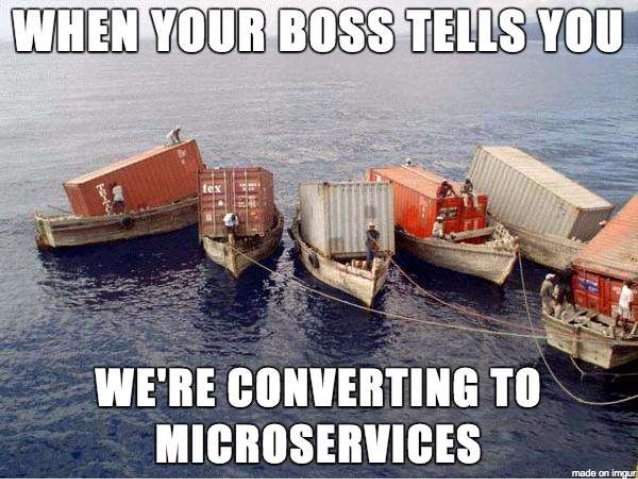
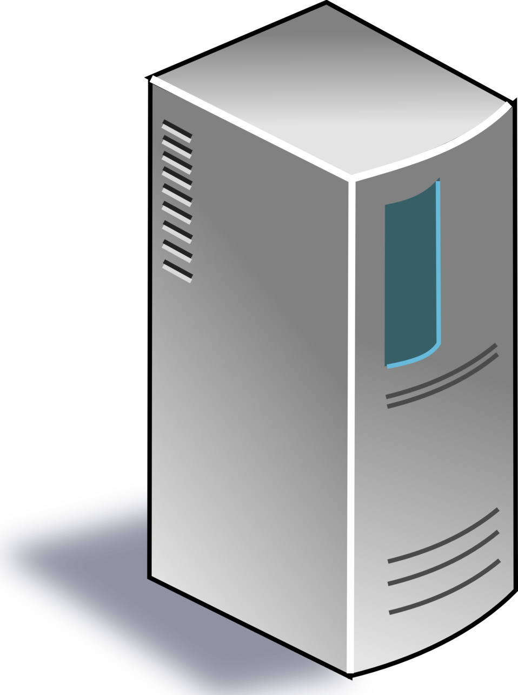
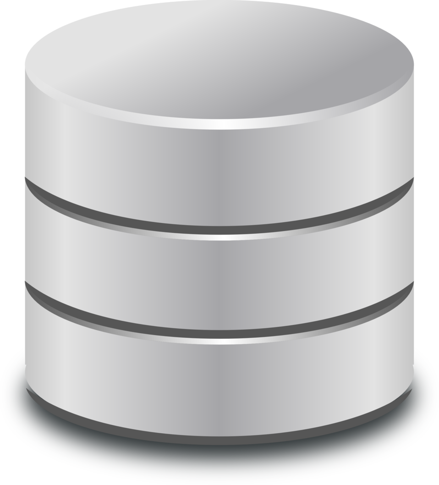

Introduction to
by Marie K. Ekeberg
Agenda
- What is Kubernetes (k8s)?
- What problems do k8s solve?
- k8s concepts
- Using kubectl
- Additional considerations
- Useful tools
- Recommended resources
Disclaimer!
What is Kubernetes (k8s)?
- Invented at Google, based on ideas from Borg
- Container orchestration
- Infrastructure component
- Greek for helmsman or pilot
What problems do k8s solve?
Solves many issues usually solved manually or by in-house tools and scripts
Replication and failover
Even when a Node in your Cluster suddenly breaks or is unavailable
Scalability
Resiliency
Application unhealthy? Deadlocks?
With correct config k8s can restart instances 4 you!
Gradual rollouts - No downtime
Security: Limiting access to containers outside the cluster
Load-balancing of resources
Resource handling (memory/disk full etc.)
Control prioritization and more through QualityOfService settings
Autoscale number of instances
(if you turn it on!)
Easier infrastructure management
k8s concepts/resources
- Nodes
- Pods
- Deployments
- Services
- Ingress
- Endpoints
- Namespaces
- ...
- Other concepts
Nodes
Physical or virtual machine in your cluster
Pods
- Lowest unit in k8s
- Contain one or more containers
- Usually part of deployment config
Pods II: Probes
- livenessProbe and readinessProbe
- Helps k8s see if a pod is ready to serve!
- Also helps k8s see if something should be restarted
Deployments
- ReplicaSets
- Main resource for content in cluster
Deployments II: YAML config
apiVersion: apps/v1
kind: Deployment
metadata:
name: bookservice-deployment
labels:
app: bookservice
spec:
replicas: 2
selector:
matchLabels:
app: bookservice
template:
metadata:
labels:
app: bookservice
spec:
containers:
- name: bookservice
image: themkat/k8sintro-bookservice:1.0
imagePullPolicy: IfNotPresent
ports:
- containerPort: 8080
Services
- Exposing pods in deployment for access
- Creates DNS entries used for communication
- 3 types:
- ClusterIP
- NodePort
- LoadBalancer
Services II: YAML config
apiVersion: v1
kind: Service
metadata:
name: bookservice-service
spec:
selector:
app: bookservice
type: ClusterIP
ports:
- protocol: TCP
port: 8080
targetPort: 8080
Ingress
- Exposes services outside cluster
- Works as a smart-router
- Runs inside cluster
Ingress II: YAML
apiVersion: networking/v1beta
kind: Ingress
metadata:
name: frontend-ingress
spec:
rules:
- http:
paths:
- path: /
backend:
serviceName: frontend-service
servicePort: 80
NodePort vs LoadBalancer vs Ingress
- NodePort: Simply open a port
- LoadBalancer: External load balancer
- One servie = One IP/URL
- Ingress: Smart router
- Many services = same IP/URL
- Different paths (e.g, /customers, /products etc.)
Endpoints
Like a deployment, but describes something outside the cluster
Endpoints II: YAML
apiVersion: v1
kind: Endpoint
metadata:
name: Database
subsets:
addresses:
- ip: 54.344.3.2
ports:
- port: 1540
Like a deployment, a service is needed to expose
Namespaces
- No namespace specified = Default namespace
- "Group" resources
Namespaces II: YAML
apiVersion: v1
kind: Namespace
metadata:
name: MyNamespace
Can also be created in CLI
Jobs
- Batch jobs
- CronJob
- Handles restartability and more
Other concepts
Several other concepts, which include:- Volumes
- Physical volumes / Physical volume claims
- ConfigMaps
- Secret
- Annotations
- ...and more!
So many resources :(
Most important:
- Deployments
- Services
Using kubectl - the Kubernetes Control CLI
Side-track: What CLIs are there?
- kubeadm
- kubelet
- kubectl
Side-track II: Running locally
- Docker Desktop
- Docker for Mac
- Minikube
Deployment and service without YAML
kubectl run --image=image:1.0 --replicas=3
# deployment created
kubectl expose --port= --name=imgservice --type=NodePort
Not used much beyond pet/toy projects
kubectl scale deployment deployment-name --replicas=6
kubectl get all
kubectl get nodes
kubectl get pods
kubectl get pods -w
kubectl get deployments
kubectl get services
kubectl get services --namespace MyNamespace
kubectl get service service-name
kubectl get namespace
kubectl get deployment deployment-name -o yaml
kubectl describe deployment deployment-name
Views all information about image pull status, errors etc.
kubectl logs podname
Applying YAML configs
kubectl apply -f file.yml
kubectl apply -f file.yml --namespace MyNamespace
Additional considerations
- Know GNU/Linux command line
- Know Docker well!
- Follow Docker image best practices in production:
- Don't use root user!
- Make images small
Useful tools

- Kompose
- Helm
Recommended resources
- KataCoda
- Kubernetes for Developers by Joseph Heck
- Kubernetes kubectl cheatsheet
- Docker CLI to kubectl
Also my github repo 4 more! ;)